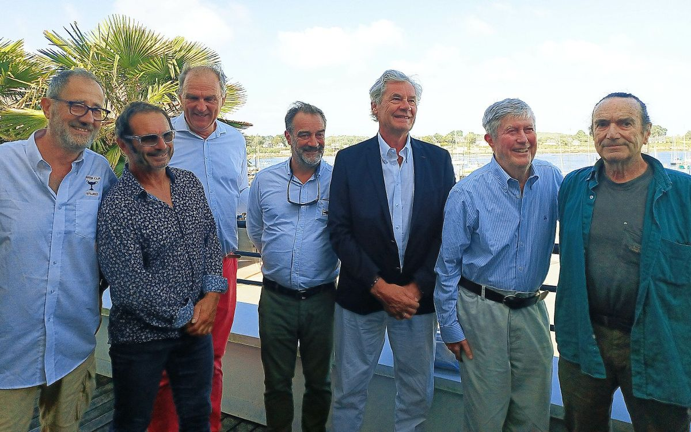

A legend of offshore racing of the 70s, to create a "revival" class, between the old wooden boats, and the all-carbon ones!
A mix of cultural and sustainable sporting project (no need to build a new boat to do the Spi Ouest).
Restart of a legendary boat with the support of a team of offshore racers with an impressive track record: Jimmy (offshore racer and deputy), admiral Philippe Coindreau (creator of the naval school grand prize), Géry Trentesaux (vice-president of the YCF) and a few others to participate with this Carter 37 in a classic regatta circuit bringing together experienced and inexperienced crews.
Through this program we want to participate in the development of the vintage IRC gauge which allows old boats from the 70s to the 90s to race in an active class which promotes the use of high-performance boats, already existing and of historical and cultural interest.
Racing at a high level on these boats rather than always looking for the new boat is also a great example of the circular economy in sports sailing.
Pordin-Nancq is a legend of ocean racing and many famous sailors who have written the history of competitive sailing have sailed aboard her.
He notably participated in the 1979 Fasnet, with 2 knock-downs (complete turns, 180° heel, keel in the air!) and the original mast is still in place 34 years later.
The sails are new, though!
In 2023, we welcomed its creator, the American architect Dick Carter, during 2 days of regattas and conferences, in La Trinité sur Mer.
This first Carter Cup organized by Passe‑Coque was a great success.

PJ Jannin, Yves Le Blevec, Jimmy, Thierry Bujon de l'Estang, Jacques Philippe Roux, Dick Carter, Jean-Yves Terlain